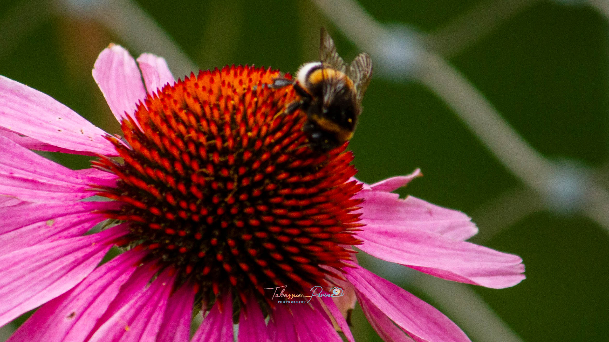
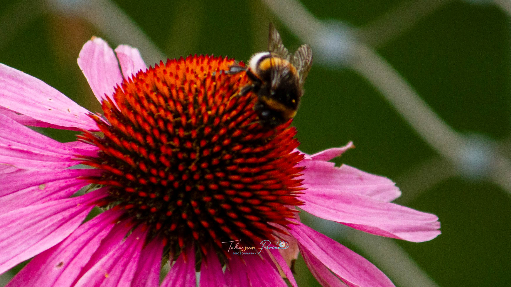

Hi, I’m Parvez — a wildlife photographer, storyteller, and passionate explorer of mountains, forests, and the unspoiled wilderness. Nature has always been my greatest teacher. From mist-covered mountain passes to remote wildlife habitats, I find purpose in documenting the raw, authentic beauty of the wild. My journey with ROAM UNTAMED began with a simple dream — to help people reconnect with nature through meaningful travel and soulful wildlife photography. Over the years, the road has become my companion and the wilderness my constant source of inspiration. Today, I curate ethical wildlife trips and road-travel experiences designed for travellers, photographers, and anyone who feels drawn to the mountains, forests, and open landscapes. Whether you’re just starting out or already deeply in love with nature, you’re welcome to journey with me into the wild. If you’re looking for someone passionate about wildlife, photography, and storytelling — someone who understands the rhythm of the wild — I’d love to help you explore, learn, and experience nature in its purest form. Let’s wander where the wild still whispers.
The open road has a way of loosening the knots within you. With every mile, the noise of the world fades, and the rhythm of nature gently takes over. Through ROAM UNTAMED, I journal my journeys across majestic mountains, wild forests, remote valleys, and untouched landscapes — documenting every sunrise, winding road, and fleeting encounter with wildlife. Travel for me is not just movement — it is connection. Connection with nature, with culture, with freedom, and with the quiet version of myself that only appears among trees, rivers, deserts, and Himalayan winds. Whether I’m tracking wildlife through dense jungles, photographing silent peaks at dawn, or simply driving endless highways beneath a wide open sky, I carry my camera and my curiosity everywhere I go. This travel journal is a space for slow travel stories, wildlife encounters, photography adventures, road trip experiences, travel inspiration, and responsible exploration. If you love the wilderness, dream of road travel, or simply want to reconnect with nature, I invite you to journey with me — one story, one photograph, and one wild moment at a time.

 



Email: roam.untamed7@gmail.com
Instagram: @roam_untamed7
WhatsApp: +91 9870023372
Mumbai • India